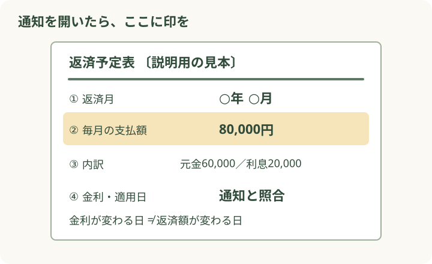
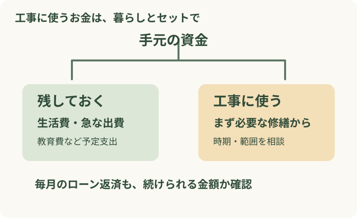

金利が上がったという通知。でも、通帳から引かれた金額は先月と同じ。「結局、うちは大丈夫なの？」と迷いますよね。
まず知りたいのは、次にいくら払うのか、その日がいつなのか。返済予定表を一緒に見れば、金利のニュースを、わが家の予定に置き換えられます。リフォームを考えている方は、工事に使えるお金もここで整理しましょう。
「毎月いくら変わる？」を確かめて、リフォーム予算を考える
公開日：
 文｜エイスケ（住宅と教育の専門家）
文｜エイスケ（住宅と教育の専門家）

金利が上がったという通知。でも、通帳から引かれた金額は先月と同じ。「結局、うちは大丈夫なの？」と迷いますよね。
まず知りたいのは、次にいくら払うのか、その日がいつなのか。返済予定表を一緒に見れば、金利のニュースを、わが家の予定に置き換えられます。リフォームを考えている方は、工事に使えるお金もここで整理しましょう。
届いた通知を手元に置いて、最新の返済予定表と見比べてみましょう。スマホの銀行アプリを使っている方は、住宅ローンの借入内容や返済予定の画面でも確認できます。[1][2] 契約の条件が分からないところは、契約書類で確かめていきます。

金利の適用日と返済額の変更日は、同じとは限りません。まず次回の返済額と変更予定日をメモ。ボーナス返済がある方は、その金額も一緒に確認します。金利変更の通知に新しい返済額が載っていなければ、最新の返済予定表を開くか、銀行に「返済額が変わるのはいつですか」と聞いてみましょう。
返済額の中身は、借りたお金を返す元金と、借りていることに対する利息。金利が上がり、毎月の返済額が据え置かれる契約では、元金に回る分が少なくなることがあります。
変更前 合計8万円
変更後 合計8万円
通帳に加えて、返済予定表の「元金」「利息」「返済後残高」を見てみましょう。今月払えるかと、借入残高がどう減るか。この二つを見ておくと、「当面の家計」と「これからの返済」を分けて考えられます。
変動金利・元利均等返済の一部には、返済額を一定期間ごとに見直す「5年ルール」と、見直し時の返済額を前回の125％までとする仕組みがあります。[1][3]
金利や利息の内訳は、その間にも変わる場合があります。
金利そのものや総支払額を125％に抑える制度ではありません。
適用の有無や見直し日は商品・契約で異なります。毎月の返済額で利息を払いきれない場合の扱いや、最終返済時に残額が生じる場合も含め、自分の契約ではどうなるかを銀行で聞きましょう。固定金利の特約期間が終わる通知なら、変動金利のルールをそのまま当てはめず、終了後の適用金利と返済額を確認してください。
雨漏りや給湯器の故障は気になる。でも、ローンの返済も増えそう。そんなときは、工事をひとまとめにせず、先に直したい不具合と時期や範囲を選べる希望に分けて見積もってもらいましょう。

浴室と内装を同時に行う案、浴室を先にして内装を後にする案。工事を分けると、養生や搬入などの費用が重なることもあります。施工者には、総額と暮らしへの影響を両方比較してもらうのがおすすめです。
仮に返済額が月8万円から8万5,000円になると、年間の負担は6万円増えます。工事代の予算と一緒に、工事後も続く毎月の支出を並べてみましょう。
「手元に残したい生活資金」「今年必要な修繕費」「無理なく返せる月額」の三つを家族で決めておくと、設備のグレードや工事範囲を選びやすくなります。
※家計整理の架空例。月5,000円×12か月＝6万円。金利からの試算ではありません。
借り換えも気になるなら、「手数料などを払っても、残りの返済全体でどれくらい変わる？」と銀行に試算を頼んでみましょう。残りの返済期間や保障条件も、今の契約と並べて比べたいところです。
次の返済額：月＿＿円／変更予定：＿＿月
ボーナス返済：＿＿円／次の見直し：＿＿年＿＿月
先に直したい不具合：＿＿＿＿＿＿
残しておくお金：＿＿円／工事予算の上限：＿＿円
まだ分からないこと：＿＿＿＿＿＿
銀行には「今回の金利変更で、毎月の支払いと完済までの見通しがどう変わりますか」。施工者には「この予算で優先したい修繕はどれですか」。メモの空欄は、そのまま質問にできます。銀行で月々の支払いを確かめてから施工者と工事の範囲を考えると、予算の話も進めやすくなります。
Q. 金利が上がったら、すぐ借り換えた方がいい？ A. 金利差だけで決めず、諸費用を含む総支払額で比べましょう。残高、残り期間、保障の内容でも結果が変わります。まず今の契約の見通しを確認するところからで十分です。
Q. 返済予定表が見つかりません。 A. インターネットバンキングで確認できる場合があります。見つからなければ契約先へ問い合わせて、最新のものを用意しましょう。
「今年どうしても直したい場所はどこ？ 少し先でもよいものは？」 「雨漏りは先に直したい」「内装は少し待てそう」。家の困りごとと、毎月の支払いを並べて話してみませんか。
確認日：2026年11月8日。本文と図は独自に制作。
窓まわり(内窓、サッシ、ガラス)、給湯設備、外壁・屋根などの外装、水まわり設備(修繕を検討する項目の一般名称)
修繕を検討する部屋・建材・設備を確かめる ↗関連記事
この記事を書いた人｜エイスケ
1986年生まれ。実家の工務店・不動産に10年間従事したのち、教育の世界へ。住宅と教育、両方の視点から「豊かな暮らし」をテーマに執筆します。※本コラムは筆者個人の見解・経験に基づくものです。最終的な判断は各分野の専門家にご相談ください。